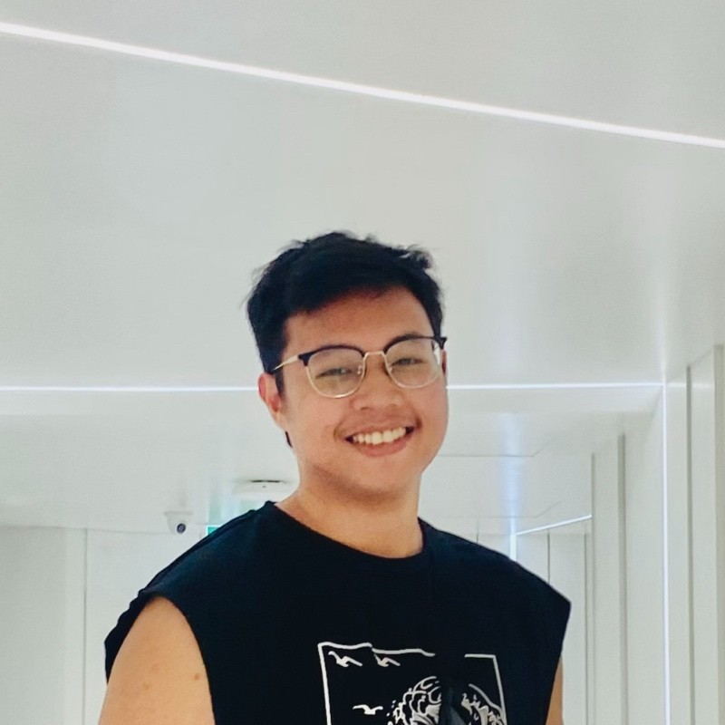

About
Passionate Engineer | Problem Solver

Software Engineer
Experienced software engineer with over 4 years of expertise in designing and building robust microservices and fault-tolerant systems. Specialising in full-stack engineering, I have extensive experience with the Node.js & Elixir ecosystems and developing engaging and intuitive UIs using React and Next.js, seamlessly integrating these technologies with leading cloud platforms such as AWS, Oracle Cloud Infrastructure (OCI), and Huawei Cloud services.
Experience
Full-Stack Engineer @ Viatick Pte. Ltd
July 2023 - Present
Singapore - Remote- Developed Node.js + Typescript backend serverless microservices on Oracle Cloud Infrastructure (OCI) for the Jarvis platform.
- Contributed to the frontend development of the Jarvis platform using React.js.
- Integrated static code analysis tools to ensure type safety and code quality, using libraries like EsLint.
- Designed and implemented features such as repeated tasks/events and geolocation data extraction from video files.
- Optimized performance of MySQL queries and managed OCI services including logging and serverless functions.
- Wrote unit tests and API controller tests using Jest for the OCI serverless functions.
Backend Engineer @ BIT Co. Ltd
January 2023 - July 2023
Yangon - Hybrid- Led the development of ATalk, a real-time websocket-based messaging application using Node.js and Express.
- Developed a signalling server with Socket.io to facilitate real-time video and audio calls via WebRTC.
- Built fault-tolerant microservices with PM2 and Docker, ensuring reliable inter-service communication with RabbitMQ.
- Administered AWS EC2 instances, including configuring Nginx for web services.
- Implemented a websocket server for real-time communication, leveraging caching with Redis and databases like DynamoDB and MongoDB.
- Developed a file management service using AWS S3 and Huawei OBS, optimizing for performance and security.
- Collaborated on backend microservices deployment using Kubernetes, Docker, and AWS ECR.
- Conducted peer code reviews and implemented unit, integration, and API tests using Jest.
Software Engineer @ Biziolab Pte. Ltd
April 2021 - December 2022
Singapore - Remote- Developed Elixir/Phoenix microservices for the Passenger Information Display System (PIDS) for Singapore Land Transport Authority (LTA).
- Implemented real-time functionalities using Phoenix Channels and enforced fault-tolerance with GenServers and Supervisors.
- Optimized concurrency through Async Task and Task Supervisors, processing big data using libraries like Flow.
- Built UI for display panels using Phoenix Liveview and surface-ui component libraries.
- Engineered a stand-alone Elixir application for real-time system/network monitoring and remote control via Phoenix Channel websockets.
- Set up CI/CD pipeline using GitHub Actions, Docker, and AWS services, ensuring smooth deployment of Elixir microservices.
- Mentored on-job trainees, conducted code reviews, and provided constructive feedback.
B.Sc (Hons) in Computing @ University of Greenwich, UK
December 2022 - December 2023
First Class Honours
- Courses: Human Computer Interaction and Design, Requirement Management, Enterprise Web Software Development, Mobile Design and Development.
Advanced Diploma in Computing @ Scottish Qualifications Authority, UK
October 2019 - September 2022
SCQF Level 8
- Courses: Computer Systems Fundamentals, Client Operating Systems, Convergence Technologies, Digital Forensics, Mathematics for Computing, Routing Technology, Server Administration, Switching Technology, Professionalism & Ethics in Computing.
Malaysian Certificate of Education @ Acmar International School, Malaysia
January 2018 - April 2019
Straight A’s [6A+, 2A, 1A-]
- Description: National examination equivalent to the GCSE of England, Nationals 4/5 of Scotland, and GCE O Level of the Commonwealth of Nations.